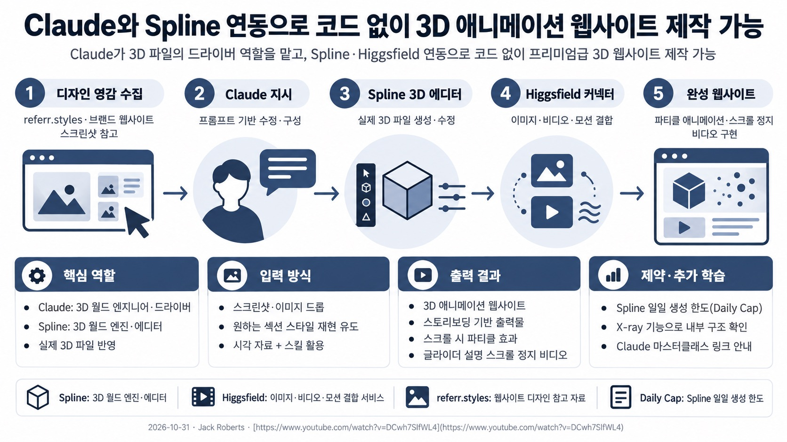
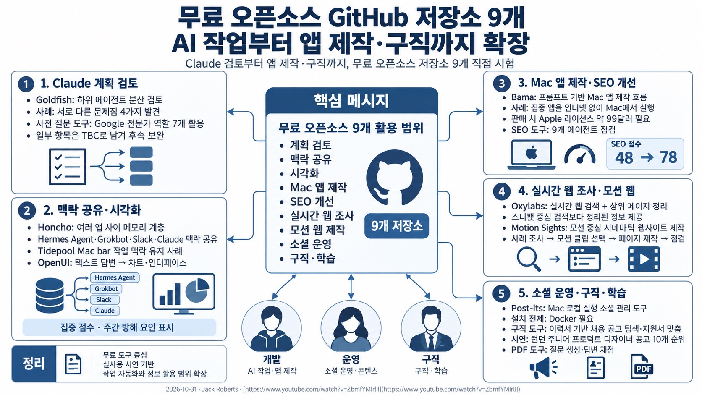
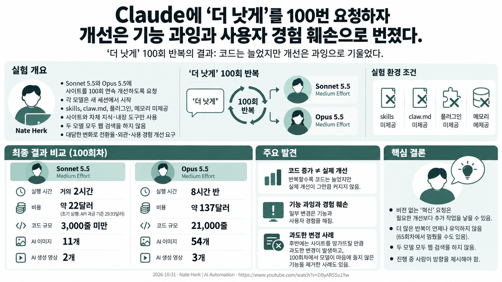
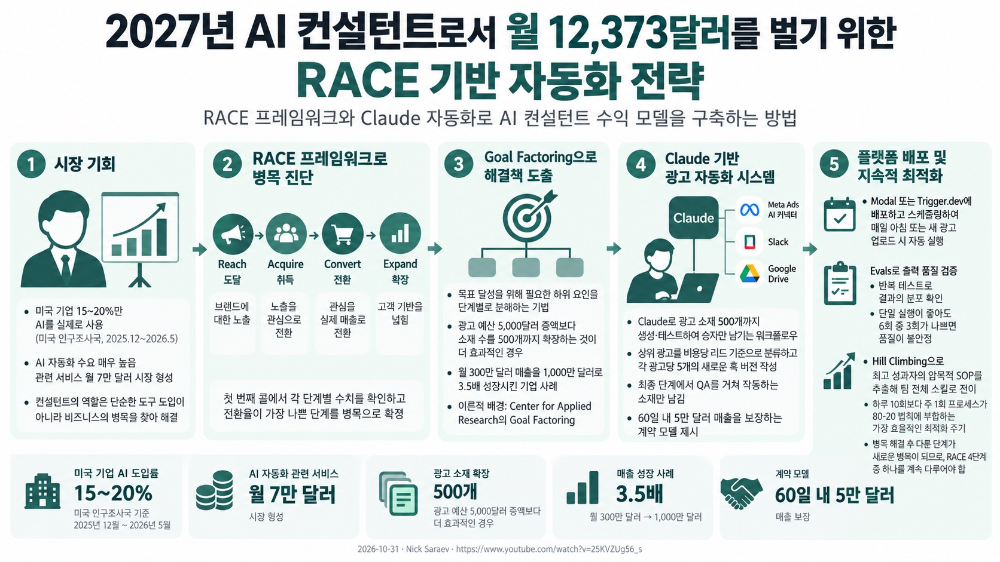
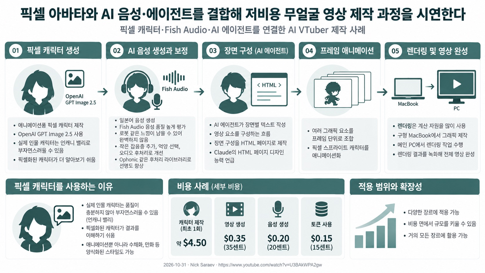
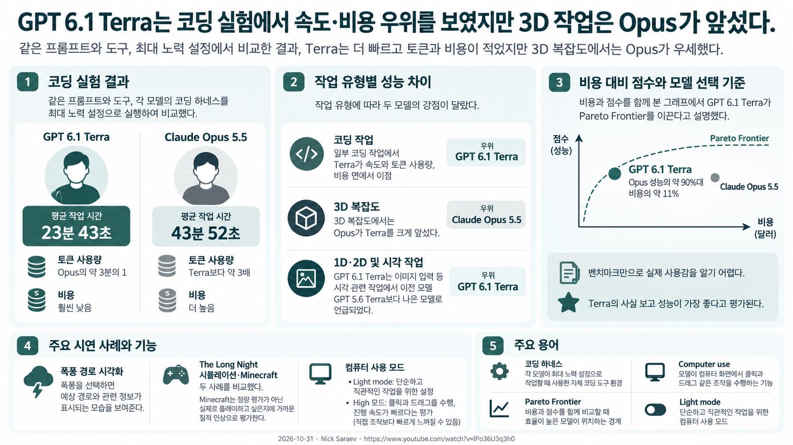
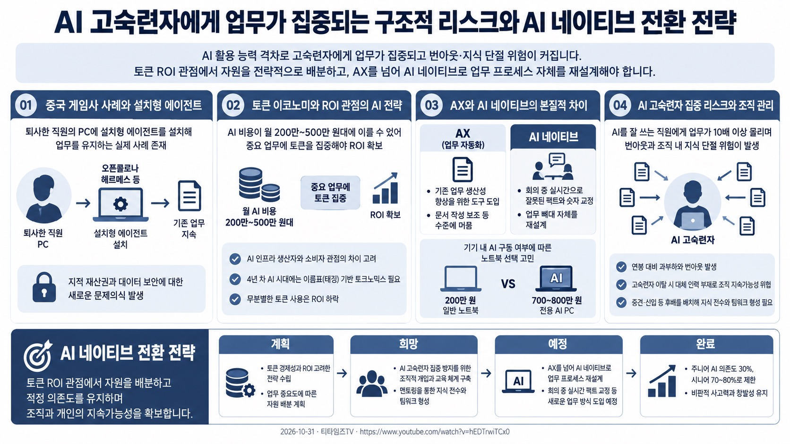
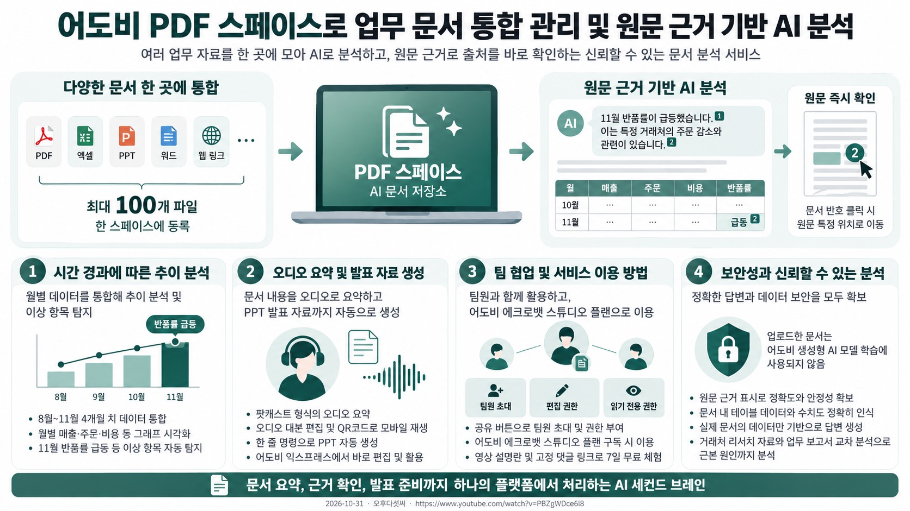

⌕
지우기
TODAY'S AI
2026.10.31 (토)
← 오늘로
오늘의 주제 | AI모델 | AI에이전트 | AI활용 | AI산업 |
|---|
| AI뉴스 | | | | |
|---|
| 유튜브 | | | | |
|---|
| 고객사용기 | | | | |
|---|
AI뉴스
5건
평일 오전 발행
- •광양만권경제자유구역청은 30일 브리브 광주 바이 롯데호텔에서 전문가 간담회를 열었다.
- •간담회에는 의료·철강·화학·항만물류 분야 전문가들이 참석해 지속가능한 발전을 논의했다.
- •참석자들은 지역 산업 강점을 활용한 신규 투자유치와 산업 간 연계·협력 방안을 다뤘다.
- •한국딥러닝은 IBK기업은행 금융소비자지원부와 VLM 기반 피해구제 업무 자동화를 구현했다고 30일 밝혔다.
- •올해 4~8월 진행한 과제는 ‘2026 공공기관 AI혁신 챌린지’ AI 서비스 실증(PoC) 부문 우수상에 선정됐다.
- •서류 처리 시간은 88% 단축됐고, 인식 정확도는 인쇄체 100%, 필기체 97%를 기록했다.
- •허깅페이스 오픈소스팀은 비전 판단 AI 모델 ‘Darwin-35B-ZTC-Vision’ 체험용 데모를 제작했다.
- •데모 앱은 무료 GPU 서비스 제로GPU에서 실행되며, 팀은 이를 비드래프트에 기증했다.
- •팀 소속 아폴리나리오는 10월 27일 모델 공개 페이지에서 공개를 축하하고 작업에 감사를 표했다.
- •Anthropic의 차세대 플래그십 모델은 집중 테스트를 받고 있는 것으로 전해졌다.
- •이 모델은 소문상 Fable 5.5 또는 Opus 5.5로 불린다.
- •메타는 무료 패션 앱 ‘Style Sketch’를 최근 조용히 출시했다.
- •앱은 페이스북이나 인스타그램에 올린 과거 사진에서 의류를 식별한다.
- •식별한 의류를 바탕으로 과거 소셜 사진 속 옷을 모은 AI 옷장을 구성한다.
#06Claude와 Spline 연동으로 코드 없이 3D 애니메이션 웹사이트 제작 가능
Jack Roberts
⧉

Claude를 3D 월드 엔진 Spline과 연결해 코드 없이 3D 애니메이션 웹사이트를 구축하는 워크플로우를 소개한다. Claude가 3D 파일의 드라이버 역할을 하며, 프롬프트 입력만으로 3D 에디터에서 구성 요소를 수정할 수 있다. referr.styles 등 브랜드 웹사이트 스크린샷을 참고자료로 제공해 Claude가 디자인을 재현하도록 유도한다. Spline 인증 후 Higgsfield 커넥터를 추가해 이미지, 비디오, 모션 요소를 결합해 프리미엄 수준으로 완성한다. Spline의 일일 생성 한도(daily cap)가 유일한 단점으로 지적되며, 전체 과정은 Claude 마스터클래스 링크로 안내된다.
#07무료 오픈소스 깃허브 저장소 9개로 AI 작업부터 앱 제작과 구직까지 확장하는 방법을 소개한다
Jack Roberts
⧉

영상은 Claude 작업 개선부터 웹사이트 제작·검색 노출·구직·학습까지 돕는 무료 오픈소스 저장소 9개를 다룬다. Goldfish 하위 에이전트들은 Claude의 계획을 독립적으로 검토하고, 사례에서 서로 다른 문제점 네 가지를 찾아낸다. Honcho는 여러 앱의 맥락을 공유하는 메모리 계층이며, OpenUI는 AI의 답변을 차트와 인터페이스로 바꾼다. Bama로 만든 웹사이트는 SEO 점수가 48에서 78로 올랐고, 아홉 에이전트가 페이지를 확인해 개선점을 제시한다. Mac 앱 제작, 실시간 웹 검색, 소셜 게시물 관리, 이력서 기반 채용 탐색, PDF 퀴즈 도구도 소개한다.
#08Claude에 ‘더 낫게’를 100번 요청하자 개선은 기능 과잉과 사용자 경험 훼손으로 번졌다.
Nate Herk | AI Automation
⧉

Nate Herk는 새 세션에서 Sonnet 5.5와 Opus 5.5에 사이트를 100회 연속 개선하도록 요청했다. 두 모델에는 skills, claw.md, 플러그인, 메모리가 없었고 각 모델의 지식과 내장 도구만 주어졌다. Sonnet은 거의 2시간·약 22달러, Opus는 8시간 반·약 137달러를 사용했고 코드 규모도 달랐다. 반복할수록 코드는 늘었지만 실제 개선이 그만큼 커지지는 않았고, 일부 변경은 기능과 사용자 경험을 해쳤다. 두 모델 모두 웹 검색을 하지 않았으며, 진행 중 사람이 방향을 제시해야 한다는 결론으로 이어졌다.
#092027년 AI 컨설턴트로서 월 12,373달러를 벌기 위한 RACE 기반 자동화 전략
Nick Saraev
⧉

미국 기업 15~20%만 AI를 도입하는 상황에서 AI 자동화 수요는 월 7만 달러까지 형성되어 있다. 디지털 비즈니스 병목은 RACE(Reach, Acquire, Convert, Expand) 프레임워크로 단계별 전환율을 측정해 찾는다. Claude와 같은 프론티어 모델을 활용해 광고 소재를 500개까지 확장하고 전환율 기반 승자만 남기는 시스템을 구축한다. Modal이나 Trigger.dev를 활용해 AI가 포함된 자동화 플로우를 스케줄링하고, Evals로 출력 품질을 검증한다. 최고 성과자의 암묵적 프로세스를 추출해 팀 전체 스킬로 전이시키는 주 1회 히일 클라이밍 루틴을 운영한다.
#10픽셀 아바타와 AI 음성·에이전트를 결합해 저비용 무얼굴 영상 제작 과정을 시연한다
Nick Saraev
⧉

애니메이션풍 픽셀 캐릭터를 만들고 음성·장면 구성·애니메이션·렌더링을 연결하는 AI VTuber 제작 과정을 보여준다. 캐릭터 이미지에는 OpenAI GPT Image 2.5를 사용하고, 실제 인물보다 양식화된 픽셀 캐릭터가 결과를 이해하기 쉽다고 설명한다. 일본어 음성은 Fish Audio로 생성했으며, 음성의 로봇 같은 느낌을 줄이는 잡음층·억양 선택·후처리 방법도 언급한다. AI 에이전트가 장면 텍스트와 HTML 페이지를 구성하고, 여러 그래픽 요소를 프레임 단위로 조합해 캐릭터를 움직인다. 발표자는 캐릭터 제작에 최초 약 4.50달러가 들고, 영상 35센트·음성 20센트·토큰 15센트가 추가된 사례를 제시한다.
#11GPT 6.1 Terra는 코딩 실험에서 속도·비용 우위를 보였지만 3D 작업은 Opus가 앞섰다.
Nick Saraev
⧉

비교에서는 같은 프롬프트와 도구를 쓰고, 각 모델은 자체 코딩 하네스를 최대 노력 설정으로 실행했다. GPT 6.1 Terra는 평균 23분 43초, Claude Opus 5.5는 평균 43분 52초 만에 작업을 끝냈다. Terra는 Opus보다 토큰을 약 3분의 1만 썼고 비용도 훨씬 낮았지만, 3D 복잡도에서는 Opus가 우세했다. 컴퓨터 사용 시연에서 Terra는 클릭과 드래그를 빠르게 수행했으며, 비용 대비 점수와 실제 사용감도 함께 논의됐다.
#12AI 고숙련자에게 업무가 집중되는 구조적 리스크와 AI 네이티브 전환 전략
티타임즈TV
⧉

중국 게임 개발사 사례로 퇴사자 PC에 설치형 에이전트를 활용해 업무를 유지하는 방식이 실제로 존재함을 확인 AI 도입 시 토큰 비용과 ROI 관점에서 중요 업무에 자원을 배분하는 전략적 접근이 필요함을 강조 AX(업무 자동화)를 넘어 회의 중 실시간 팩트 교정 등 업무 프로세스 자체를 재설계하는 AI 네이티브 단계 제시 AI 고숙련자에게 업무가 몰리면서 발생하는 번아웃과 조직 내 지식 단절 리스크를 지적하고 멘토링 필요성 언급 AI 의존도를 주니어 30%, 시니어 70~80%로 조절하여 비판적 사고력과 창발성을 유지해야 한다고 조언
#13어도비 PDF 스페이스로 업무 문서 통합 관리 및 원문 근거 기반 AI 분석
오후다섯씨
⧉

PDF 스페이스는 PDF, 엑셀, PPT, 웹 링크 등 최대 100개 파일을 한 곳에 모아 AI로 분석하는 서비스다. AI가 생성한 답변의 수치마다 원문 문서 내 위치를 번호로 표시해 출처를 즉시 확인하게 한다. 사용자가 업로드한 문서는 어도비 생성형 AI 모델 학습에 사용되지 않아 데이터 보안성을 확보한다. 새로운 월별 보고서가 추가되면 기존 데이터와 통합해 추이 분석 및 이상 항목 탐지가 가능하다. 문서 내용을 오디오로 요약해 모바일로 청취하거나, 어도비 익스프레스로 발표 자료를 생성할 수 있다.
고객사용기
5건
출처별 최대 4개
모임 3
주요 주제 3개
- •Argon을 쓰다가 토큰을 크게 소모하는 경우가 있다는 체감이 공유됐다.
- •이에 모델을 바로 따라 쓰기보다 한 박자 늦춰 사용한다는 반응도 이어졌다.
- •플래시를 사용하다 사실과 다른 답을 자주 접한다는 불만이 나왔다.
- •사용자는 이를 감안해 여러 모델을 섞어 쓰고 있다고 했다.
- •배포된 페이지 하단에 버튼이 보이는 이유를 묻자, MCP로 연결했으며 배포하면 버튼이 붙는다는 설명이 나왔다.
- •해당 표시만으로 에이전트 기능을 직접 사용했다고 볼 수는 없다는 반응도 있었다.
모임 5
주요 주제 2개
- •공유된 생성 영상에 대해 액션 표현이 어렵다는 반응이 나왔다.
- •대화에는 사용한 영상 생성 서비스나 구체적인 프롬프트 조건은 적혀 있지 않았다.
- •영상 편집에 가사를 넣을 때 LRC 형식으로 가져와야 싱크가 비교적 잘 맞는다는 팁이 공유됐다.
- •가사 파일은 다운로더로 LRC나 SRT 형식으로 받는다는 사용 방식도 나왔다.
오늘의 키워드 : Claude, 제작, 모델
GPT 6.1 Terra는 코딩 실험에서 속도·비용 우위를 보였지만 3D 작업은 Opus가 앞섰다.
“GPT 6.1 Terra는 평균 23분 43초, Claude Opus 5.5는 평균 43분 52초 만에 작업을 끝냈다.” #11
픽셀 아바타와 AI 음성·에이전트를 결합해 저비용 무얼굴 영상 제작 과정을 시연한다
“발표자는 캐릭터 제작에 최초 약 4.50달러가 들고, 영상 35센트·음성 20센트·토큰 15센트가 추가된 사례를 제시한다.” #10
허깅페이스 오픈소스팀, 비드래프트 AI 데모 기증
“팀 소속 아폴리나리오는 10월 27일 모델 공개 페이지에서 공개를 축하하고 작업에 감사를 표했다.” #03